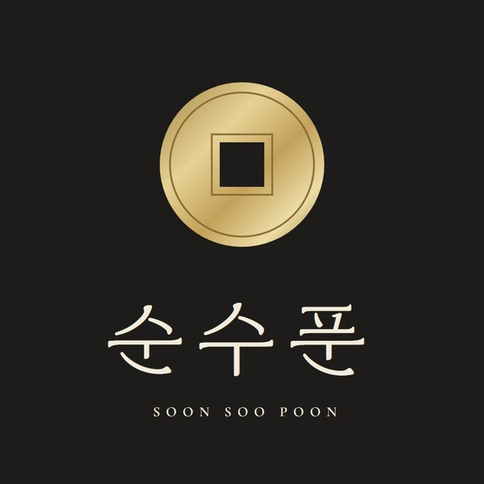
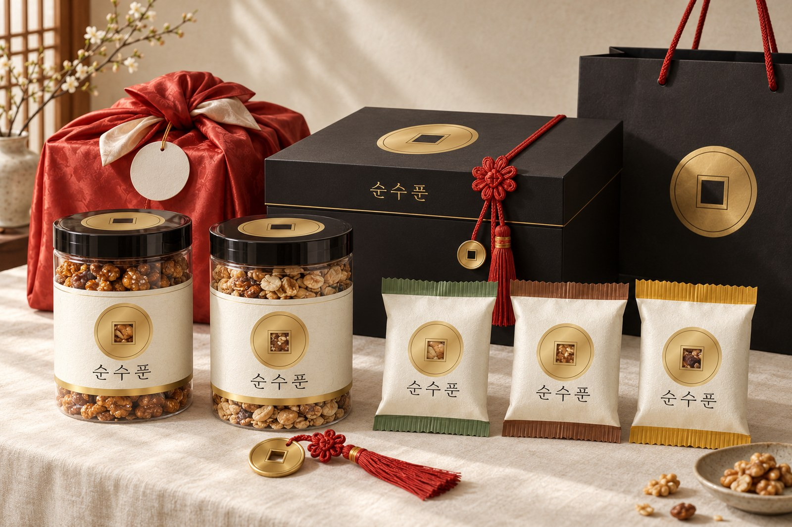
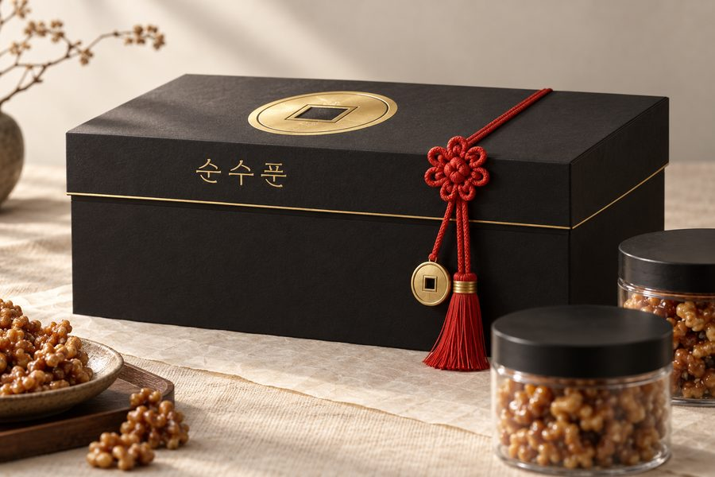
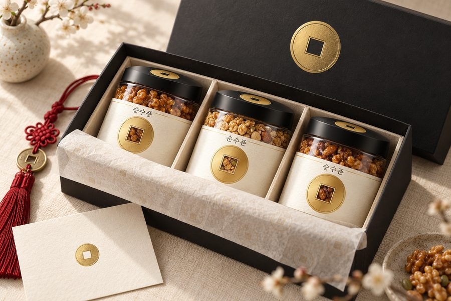
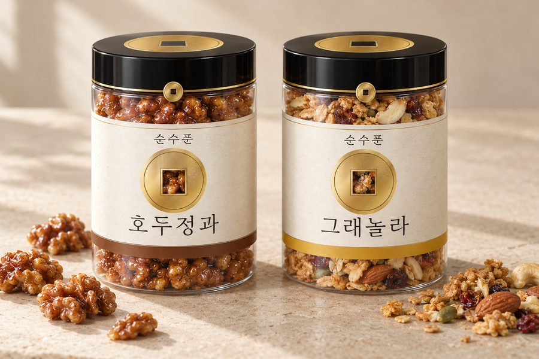
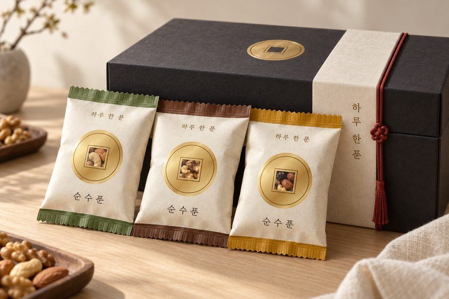
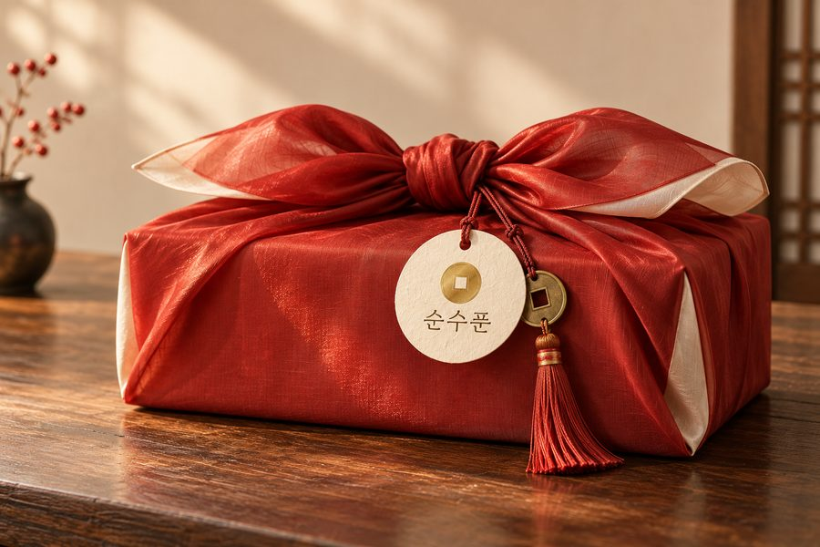
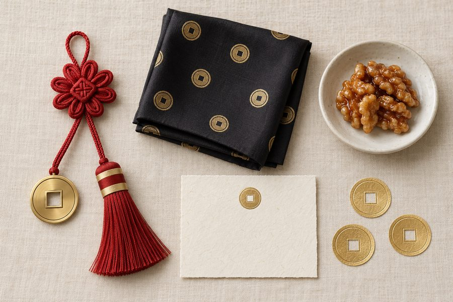
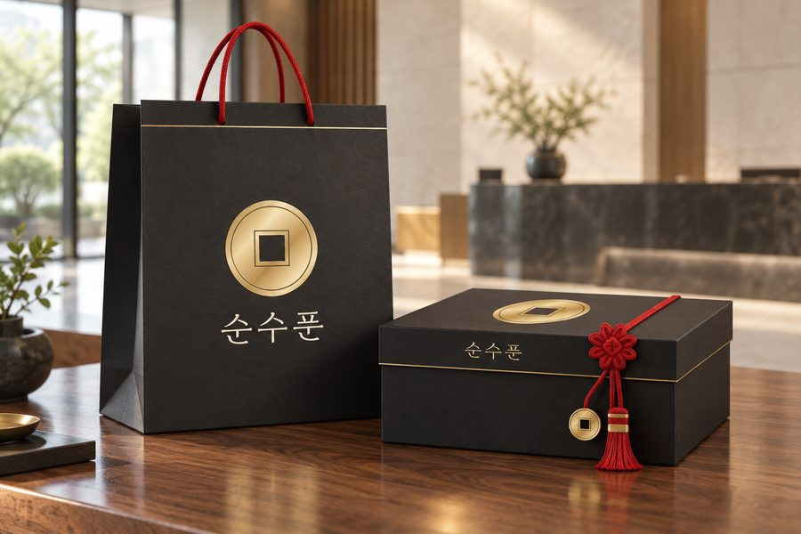
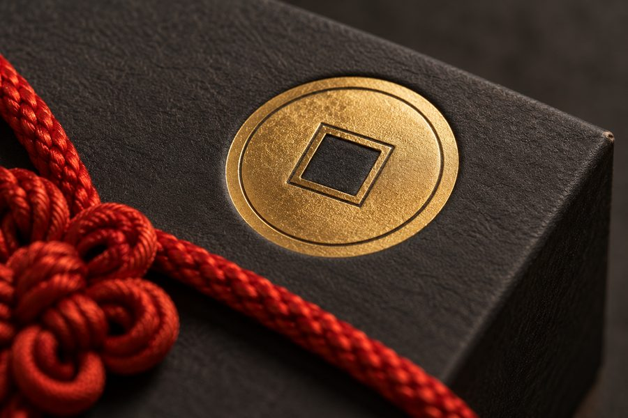

이름에서 꺼낸 로고 — 엽전 한 닢
'푼'은 옛날 엽전 한 닢을 세던 말입니다. 그래서 둥근 테두리에 네모 구멍이 난 엽전을 로고로 삼았습니다. 조선 후기 혼수품 '별전열쇠패'처럼 붉은 매듭에 엽전 장식을 달아, 받는 분께 복과 번창을 함께 보냅니다.
근거: 표준국어대사전 「푼」 "예전에, 엽전을 세던 단위. 한 푼은 돈 한 닢을 이른다." · 국립민속박물관 소장 「별전열쇠패」


'푼'은 옛날 엽전 한 닢을 세던 말입니다. 그래서 둥근 테두리에 네모 구멍이 난 엽전을 로고로 삼았습니다. 조선 후기 혼수품 '별전열쇠패'처럼 붉은 매듭에 엽전 장식을 달아, 받는 분께 복과 번창을 함께 보냅니다.
먹색 상자에 금박 엽전 하나, 붉은 국화매듭에 엽전 장식과 술. 열기 전부터 귀한 선물로 보이게 했습니다.

안은 한지로 밝게. 통 세 개가 칸마다 서 있고, 엽전 무늬 한지와 인사 카드가 먼저 보입니다.

라벨 한가운데 엽전, 그 네모 구멍으로 견과가 보입니다. 뚜껑은 먹색에 금박 엽전.

처음 말씀하신 '한 팩씩 소포장'도 같은 엽전으로. 제품은 위아래 색 띠로만 구분합니다.

설·추석에는 상자를 주홍 비단 보자기로 싸고, 한지 이름표와 엽전 장식을 답니다.

매듭에서 떼어 쓰는 엽전 장식, 엽전 무늬 손수건, 견과를 덜어 먹는 백자 종지, 엽전 봉인 스티커. 박물관 굿즈처럼 선물이 하나 더 남습니다.

먹색 쇼핑백에 금박 엽전, 손잡이는 주홍 꼰끈. 상자와 한 벌로 보입니다.

엽전은 금박을 찍고 살짝 눌러 입체감을 줍니다. 손끝에 닿는 촉감까지 선물의 일부입니다.

평소엔 먹색 상자 + 금박 엽전 + 주홍 국화매듭, 명절엔 주홍 보자기. 같은 엽전 하나로 통·한 봉·굿즈까지 이어집니다.